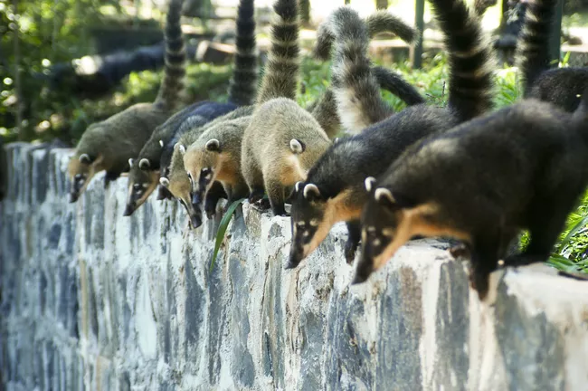
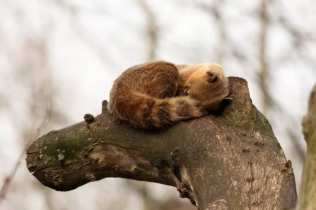

The Coatimundi (genus Nasua) are apart of the raccoon family found in Arizona and South America. They hang out in trees of mountains. These social animals live in large groups and even babysit their eachothers offspring. Through chirping, they communicate to their offspring and alert eachother from danger. They are very vital in their ecosytems as they control insect populations, disperse seeds, and aerate the soil.
 